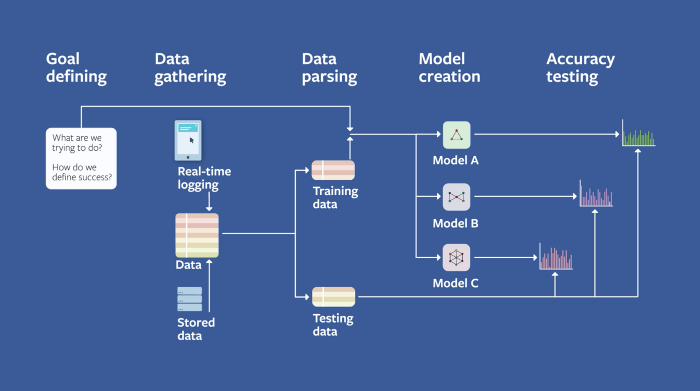

<?xml version="1.0" encoding="UTF-8"?><rss xmlns:dc="http://purl.org/dc/elements/1.1/" xmlns:content="http://purl.org/rss/1.0/modules/content/" xmlns:atom="http://www.w3.org/2005/Atom" version="2.0" xmlns:media="http://search.yahoo.com/mrss/"><channel><title><![CDATA[system design - Rico Meinl]]></title><description><![CDATA[I'm interested in biotech, longevity, machine learning and the decentralized web]]></description><link>https://rmeinl.com/ghost/</link><image><url>https://rmeinl.com/ghost/favicon.png</url><title>system design - Rico Meinl</title><link>https://rmeinl.com/ghost/</link></image><generator>Ghost 4.3</generator><lastBuildDate>Mon, 26 Apr 2021 11:34:50 GMT</lastBuildDate><atom:link href="https://rmeinl.com/ghost/tag/system-design/rss/" rel="self" type="application/rss+xml"/><ttl>60</ttl><item><title><![CDATA[Machine Learning System Design]]></title><description><![CDATA[Some great resources on Machine Learning System designs from Facebook, Twitter, Google, Airbnb, Uber, Instagram, Netflix, AWS and Spotify.]]></description><link>https://rmeinl.com/ghost/machine-learning-system-design/</link><guid isPermaLink="false">6085751174348916f1b0899b</guid><category><![CDATA[machine learning]]></category><category><![CDATA[system design]]></category><category><![CDATA[data science]]></category><dc:creator><![CDATA[Rico Meinl]]></dc:creator><pubDate>Mon, 02 Mar 2020 21:40:00 GMT</pubDate><content:encoded><![CDATA[<p><a href="https://becominghuman.ai/machine-learning-system-design-f2f4018f2f8">Read this post on Medium.</a></p><figure class="kg-card kg-image-card kg-card-hascaption"><figcaption>Facebook Field Guide to Machine Learning</figcaption></figure><p>While preparing for job interviews I found some great resources on Machine Learning System designs from Facebook, Twitter, Google, Airbnb, Uber, Instagram, Netflix, AWS and Spotify.</p><p>I find this to be a fascinating topic because it&#x2019;s something not often covered in online courses.</p><p><strong>Twitter</strong></p><ul><li><a href="https://blog.twitter.com/engineering/en_us/topics/insights/2017/using-deep-learning-at-scale-in-twitters-timelines.html" rel="noopener">Using Deep Learning at Scale in Twitter&#x2019;s Timelines</a></li><li><a href="https://blog.twitter.com/engineering/en_us/topics/insights/2019/improving-engagement-on-digital-ads-with-delayed-feedback.html" rel="noopener">Improving engagement on digital ads with delayed feedback</a></li><li><a href="https://blog.twitter.com/engineering/en_us/topics/insights/2018/embeddingsattwitter.html" rel="noopener">Embeddings@Twitter</a></li></ul><p><strong>Instagram</strong></p><ul><li><a href="https://instagram-engineering.com/lessons-learned-at-instagram-stories-and-feed-machine-learning-54f3aaa09e56" rel="noopener">Lessons Learned at Instagram Stories and Feed Machine Learning</a></li><li><a href="https://ai.facebook.com/blog/powered-by-ai-instagrams-explore-recommender-system/" rel="noopener">Powered by AI: Instagram&#x2019;s Explore recommender system</a></li></ul><p><strong>Facebook</strong></p><ul><li><a href="https://engineering.fb.com/security/fighting-abuse-scale-2019/" rel="noopener">Deep Entity Classification: An abusive account detection framework</a></li><li><a href="https://ai.facebook.com/blog/community-standards-report/" rel="noopener">New progress in using AI to detect harmful content</a></li></ul><p><strong>Uber Eats</strong></p><ul><li><a href="https://eng.uber.com/uber-eats-query-understanding/" rel="noopener">Food Discovery with Uber Eats: Building a Query Understanding Engine</a></li><li><a href="https://eng.uber.com/uber-eats-recommending-marketplace/" rel="noopener">Food Discovery with Uber Eats: Recommending for the Marketplace</a></li><li><a href="https://eng.uber.com/uber-eats-graph-learning/" rel="noopener">Food Discovery with Uber Eats: Using Graph Learning to Power Recommendations</a></li></ul><p><strong>Uber</strong></p><ul><li><a href="https://eng.uber.com/nlp-deep-learning-uber-maps/" rel="noopener">Applying Customer Feedback: How NLP &amp; Deep Learning Improve Uber&#x2019;s Maps</a></li><li><a href="https://eng.uber.com/forecasting-introduction/" rel="noopener">Forecasting at Uber: An Introduction</a></li></ul><p><strong>Airbnb</strong></p><ul><li><a href="https://medium.com/airbnb-engineering/using-machine-learning-to-predict-value-of-homes-on-airbnb-9272d3d4739d">Using Machine Learning to Predict Value of Homes On Airbnb</a></li><li><a href="https://medium.com/airbnb-engineering/listing-embeddings-for-similar-listing-recommendations-and-real-time-personalization-in-search-601172f7603e">Listing Embeddings in Search Ranking</a></li><li><a href="https://medium.com/airbnb-engineering/learning-market-dynamics-for-optimal-pricing-97cffbcc53e3">Learning Market Dynamics for Optimal Pricing</a></li><li><a href="https://medium.com/airbnb-engineering/categorizing-listing-photos-at-airbnb-f9483f3ab7e3">Categorizing Listing Photos at Airbnb</a></li><li><a href="https://medium.com/airbnb-engineering/applying-deep-learning-to-airbnb-search-7ebd7230891f">Applying Deep Learning To Airbnb Search</a></li><li><a href="https://medium.com/airbnb-engineering/discovering-and-classifying-in-app-message-intent-at-airbnb-6a55f5400a0c">Discovering and Classifying In-app Message Intent at Airbnb</a></li></ul><p><strong>Airbnb Experiences</strong></p><ul><li><a href="https://medium.com/airbnb-engineering/machine-learning-powered-search-ranking-of-airbnb-experiences-110b4b1a0789">Machine Learning-Powered Search Ranking of Airbnb Experiences</a></li></ul><p><strong>Linkedin</strong></p><ul><li><a href="https://engineering.linkedin.com/blog/2018/10/an-introduction-to-ai-at-linkedin" rel="noopener">An Introduction to AI at LinkedIn</a></li><li><a href="https://engineering.linkedin.com/blog/2019/fairness-privacy-transparency-by-design" rel="noopener">Fairness, Privacy, and Transparency by Design in AI/ML Systems</a></li><li><a href="https://engineering.linkedin.com/blog/2019/06/building-communities-around-interests" rel="noopener">Communities AI: Building Communities Around Interests on LinkedIn</a></li><li><a href="https://engineering.fb.com/security/fighting-abuse-scale-2019/" rel="noopener">Preventing abuse using unsupervised learning</a></li></ul><p><strong>Google</strong></p><ul><li><a href="http://highscalability.com/blog/2016/3/16/jeff-dean-on-large-scale-deep-learning-at-google.html" rel="noopener">Jeff Dean On Large-Scale Deep Learning At Google</a></li></ul><p><strong>Netflix</strong></p><ul><li><a href="https://www.youtube.com/watch?v=kY-BCNHd_dM" rel="noopener">A Multi-Armed Bandit Framework for Recommendations at Netflix</a></li></ul><p><strong>Spotify</strong></p><ul><li><a href="https://labs.spotify.com/2020/01/16/for-your-ears-only-personalizing-spotify-home-with-machine-learning/" rel="noopener">For Your Ears Only: Personalizing Spotify Home with Machine Learning</a></li><li><a href="https://medium.com/s/story/spotifys-discover-weekly-how-machine-learning-finds-your-new-music-19a41ab76efe">How Does Spotify Know You So Well?</a></li></ul><hr><p>In addition, here are some resources on a more general process. Starting with the book <a href="https://www.amazon.com/Data-Science-Business-Data-Analytic-Thinking/dp/1449361323" rel="noopener">Data Science for Business</a> which explains the CRISP-DM (Cross Industry Standard Process for Data Mining).</p><p>The process involves six stages:</p><ol><li>Business Understanding</li><li>Data Understanding</li><li>Data Preparation</li><li>Modelling</li><li>Evaluation</li><li>Deployment</li></ol><p>Here is a more high-level breakdown on <a href="https://gist.github.com/bluekidds/cad5c0ea2e5051b638ec39810f3c4b09" rel="noopener">how to apply CRISP-DM on AWS.</a></p><p>Facebook also created a video series where they go into depth in how they structure Machine Learning Projects with the <a href="https://research.fb.com/the-facebook-field-guide-to-machine-learning-video-series/" rel="noopener">Facebook Field Guide</a> to Machine Learning.</p>]]></content:encoded></item></channel></rss>